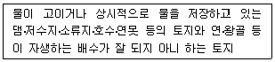

지적산업기사 (2006-05-14 기출문제)
1과목: 지적측량
1. 지적측량에 대한 설명으로 틀린 것은?
- 일필지 등록을 위한 특수측량이다.
- 기초측량과 세부측량으로 구분한다.
- 법률적 규제를 받는 귀속측량이다.
- 토지측량과 건축측량으로 구분한다.
(정답률: 알수없음)

2. 지적도면에 등록하는 동ㆍ리의 행정구역 경계선 폭은?
- 0.1㎜
- 0.2㎜
- 0.3㎜
- 0.4㎜
(정답률: 알수없음)
3. 중부원점지역에 포함되는 교차점은?
- 북위 37°, 25,′ 35″와 동경 125°, 39′, 15″ 의 교차점
- 북위 36°, 35′, 45″와 동경 126°, 49′, 25″ 의 교차점
- 북위 35°, 45′, 55″와 동경 128°, 49′, 35″ 의 교차점
- 북위 34°, 550, ⑤′와 동경 129°, 19′, 45″ 의 교차점
(정답률: 42%)
4. 축척 1/600 지적도를 기초로 도곽의 규격이 동일한 축척 1/3,000의 지적도를 제작하려 할 때 새로운 지적도 1매를 만들기 위해서는 축척 1/600의 지적도 몇 매가 있어야 하는가?
- 5매
- 10매
- 20매
- 25매
(정답률: 알수없음)
5. 지적측량의 기초측량에서 지적도근측량에 가장 많이 사용되는 도선망으로 옳은 것은?
- 개방도선
- 폐합도선
- 결합도선
- 왕복도선
(정답률: 70%)
6. 지적도근측량에서 1도선의 기지방위각과 관측방위각의 허용오차의 제한으로 맞는 것은? (단, n : 폐색변을 포함한 변수)
- 배각법 1등 도선 ±20√n 초 이내, 방위각법 1등 도선 ±1.5√n 분 이내
- 배각법 2등 도선 ±√n 초 이내, 방위각법 2등 도선 ±√n 분 이내
- 배각법 1등 도선 ±30√n 초 이내, 방위각법 1등 도선 ±√n 분 이내
- 배각법 2등 도선 ±30√n 초 이내, 방위각법 2등 도선 ±1.5√n 분 이내
(정답률: 알수없음)
7. 경위의측량방법으로 세부측량을 실시할 경우 수평각 관측 방법은?
- 2배각의 배각법
- 3배각의 배각법
- 1회 관측의 교각법
- 2대회의 방향관측법
(정답률: 알수없음)
8. 지적삼각보조측량을 다각망도선법에 의할 경우 도선별 평균방위각과 관측방위각의 폐색오차는? (단, n=폐색변을 포함한 변의 수)
- ±10√n
- ±20√n
- ±30√n
- ±40√n
(정답률: 67%)
9. 평면직각좌표에서 임의의 2점 A(500, -1200), B(400. -800)를 연결하는 직선 AB의 방위각은?
- 30°
- 135°
- 150°
- 315°
(정답률: 50%)
10. 지적위성기준점 성과의 고시사항에 해당하지 않는 것은?
- 지적위성기준점의 명칭 및 번호
- 시준점의 명칭과 방위각
- 좌표 및 표고
- 소재지와 측량연월일
(정답률: 알수없음)
11. 도면의 축척이 1200분의 1 지역에서 1필지의 산출면적이 48.38m2 일 경우 결정 면적은?
- 48m2
- 48.3m2
- 48.4m2
- 49.0m2
(정답률: 알수없음)
12. 다음 중 지적측량의 방법이 아닌 것은?
- 측판측량
- 전파기 또는 광파기측량
- 경위의측량
- 수준측량
(정답률: 알수없음)
13. 지적도근점의 연직각을 관측할 때에는 올려본 각과 내려본각을 관측한다. 이 때의 최대 허용교차는?
- 30초 이내
- 60초 이내
- 90초 이내
- 120초 이내
(정답률: 알수없음)
14. 축척 1/1000에서 도상 위치 오차를 0.1㎜까지 허용 할 때에 측점의 최대 편심량은?
- 15㎝
- 10㎝
- 5㎝
- 2.5㎝
(정답률: 알수없음)
15. 다음 중 경위의측량방법에 의한 세부측량을 할 때 준수하여야 할 사항을 잘못 적용한 것은?
- 토지의 경계가 곡선인 경우 직선으로 연결하는 곡선의 중앙종거를 15㎝로 하였다.
- 미리 각 경계점에 표지를 설치하였다.
- 관측에 10초독짜리 경위의를 사용하였다.
- 수평각의 관측을 1대회의 방향관측법에 의하였다.
(정답률: 알수없음)
16. 면적을 측정할 대상이 아닌 것은?
- 축척변경을 하는 경우
- 경계정정을 하는 경우
- 토지합병을 하는 경우
- 지적공부를 복구하는 경우
(정답률: 알수없음)
17. 광파기로 2점 간의 거리를 2회 측정하였을 때 정밀도는? (단, 1회측정치 : 50.54m, 2회 측정치 : 50.58m임)
- 1/842
- 1/1,264
- 1/1,888
- 1/3,316
(정답률: 알수없음)
18. 농지의 구획정리시행지역을 경위의 측량방법으로 시행할 때에 적성하는 측량결과도의 축척은?
- 1/500
- 1/600
- 1/1000
- 1/1200
(정답률: 40%)
19. 지적도근점의 위치를 선점하는데 고려되어야 할 조건으로 타당하지 못한 것은?
- 후속 세부측량 작업이 용이한 위치에 선점
- 지적도근점의 표지관리가 용이한 위치에 선점
- 통과 교통이 많은 도로 중앙의 위치에 선점
- 점간 상호시준이 가능한 위치에 선점
(정답률: 알수없음)
20. 측판측량에 의한 세부측량 방법으로 옳지 않은 것은?
- 교회법
- 도선법
- 비례법
- 방사법
(정답률: 알수없음)
2과목: 응용측량
21. 촬영고도 2100m에서 초점거리 21㎝인 카메라로 60%의 종중복을 주어 활영한 수직항공사진 한 장의 화면크기가 18㎝×18㎝라 하면 사진모델의 기선고도비는 얼마인가?
- 0.34
- 0.45
- 0.56
- 0.67
(정답률: 알수없음)
22. 지성선의 방향에 대하여 거리와 높이를 관측하여 등고선을 그리는 방법은?
- 직접관측법
- 방안법
- 종단점법
- 횡단측량결과 이용법
(정답률: 알수없음)
23. 다음 용어 설명 중 옳지 않은 것은?
- 후시 : 표고를 알고 있는 점에 표척을 세워서 취한 표척의 읽음 값을 말한다.
- 표고 : 수준원점에서 수직방향으로 측정한 어느 점까지의 경사거리를 말한다.
- 지반고 : 기준면으로부터 측점까지의 연직거리를 말한다.
- 수준면 : 연직선에 직교하는 모든 점을 잇는 곡면을 말한다.
(정답률: 알수없음)
24. 교각(I)과 반경(R)을 알고 있는 원곡선의 외선장(E)을 구하는 공식은?
- E = R × tan

- E = 2R × sin

- E = R (1 – cos
 )
) - E = R (sec
 – 1)
– 1)
(정답률: 알수없음)
25. 등고선의 성질에 대한 설명으로 옳은 것은?
- 등고선은 분수선과 평행하다.
- 평면을 이루는 지표의 등고선은 서로 수직한 직선이다.
- 수원(水原)에 rkRKdns 부분은 하류보다도 경사가 완만하게 보인다.
- 동등한 경사의 지표에서 두 등고선 간의 수평거리는 서로 같다.
(정답률: 알수없음)
26. 항공사진에서 연직점과 주점 간의 거리가 6㎜로 나타날 때 이 사진의 경사는 대략 얼마인가? (단, 초점거리 = 150㎜, 사진축척 = 1 : 5,000)
- 2° 06′ 58″
- 2° 50′ 26″
- 2° 17′ 26″
- 2° 20′ 26″
(정답률: 알수없음)
27. 철도의 캔트량을 결정하는데 고려하지 않아도 되는 사항은?
- 설계속도
- 곡선반경
- 레일간격
- 확폭
(정답률: 알수없음)
28. 다음 등고선 중 선의 굵기가 가장 굵은 것은?
- 계곡선
- 주곡선
- 간곡선
- 조곡선
(정답률: 알수없음)
29. 다음 중 수준측량에서 기계고 산출 식으로 옳은 것은? (단, I.H : 기계고, G.H : 표고, F.S : 전시, B.S : 후시)
- I.H = G.H - F.S
- I.H = G.H + F.S - B.S
- I.H = G.H + B.S
- I.H = G.H - B.S - F.S
(정답률: 알수없음)
30. 다음 중 위성측량 시스템과 가장 거리가 먼 것은?
- GPS
- GLONASS
- GALILEO
- NOAA
(정답률: 알수없음)
31. 어떤 지역의 표고가 100m이다. 이 지역을 초점거리가 153㎜인 카메라로 축척 1/37,500인 항공사진을 촬영할 때 비행기의 촬영고도는?
- 200.5m
- 760.5m
- 5837.5m
- 8000.5m
(정답률: 알수없음)
32. 토지에서 비고가 있을 때 촬영고도가 5,000m, 비고 120m일 때 사진 연직점에서 투영점까지의 사진상 거리가 15㎝인 지점에서 사진상의 기복 변위는?
- 400㎝
- 0.4㎝
- 4㎝
- 40㎝
(정답률: 알수없음)
33. 레벨 기포관의 기포를 1눈금 기울인 경우 50m 떨어진 표척의 눈금을 읽었을 때 눈금 차가 1.5㎝였다면 이 기포관의 감도는?
- 61.9″
- 72.5″
- 80.5″
- 81.9″
(정답률: 알수없음)
34. 위성측량에서 GPS에 의하여 위치를 결정하는 기하학적인 원리는?
- 위성에 의한 평균계산법
- 위성기점 무선항법에 의한 후방교회법
- 수신기에 의하여 처리하는 자료해석법
- GPS에 의한 페합 도선법
(정답률: 40%)
35. 갱내측량에 대한 설명으로 맞는 것은?
- 지상측량보다 작업이 용이하다.
- 갱내의 기준점은 갱외의 기준점과 연결할 필요가 없다
- 기준점은 보통 천정에 설치한다.
- 지상측량에 비하여 갱내에서는 시통이 좋아서 측점 간의 거리를 멀리한다.
(정답률: 알수없음)
36. 다음 중 항공사진측량의 장점으로 볼 수 없는 것은?
- 정성적인 측정이 가능하다.
- 좁은 지역의 측량일수록 경제적이다.
- 분업화에 의한 능률적 작업이 가능하다.
- 움직이는 물체의 상태를 분석할 수 있다.
(정답률: 알수없음)
37. 한 개의 깊은 수직갱에서 갱내외를 연결하는 연결측량방법으로서 가장 적당한 것은?
- 트래버스 측량방법
- 트랜싯과 추선에 의한 방법
- 삼각측량 방법
- 측위 망원경에 의한 방법
(정답률: 알수없음)
38. 사진판독에 사용하는 요소가 아닌 것은?
- 색조
- 형상
- 과고감
- 촬영고도
(정답률: 알수없음)
39. 곡선반경 500m 되는 원곡선 상을 60km/h 로 주행하려면 편경사는? (단, 궤간은 1,067㎜임)
- 0.06⑤㎜
- 6.⑤㎜
- 60.5㎜
- 0.6⑤㎜
(정답률: 28%)
40. 곡선반경(R) = 300m, 교각(I) = 50° 인 단곡선의 곡선장(C.L)은?
- 139.89m
- 192.84m
- 253.57m
- 261.80m
(정답률: 알수없음)
3과목: 토지정보체계론
41. 토지정보체계를 구축해야 되는 필요성에 대한 설명으로 가장 거리가 먼 것은?
- 토지관계 정책 자료의 다목적 활용
- 여러 대장과 도면의 효율적 관리
- 지적 민원의 신속, 정확한 처리
- 토지관련 정보의 보안 강화
(정답률: 80%)
42. 다음 중 도형정보가 아닌 것은?
- 지적도
- 지형도
- 도시계획도
- 건축물대장
(정답률: 알수없음)
43. 데이터베이스의 구조모델이 아닌 것은?
- 평면구조 데이터베이스 모델
- 계층구조 데이터베이스 모델
- 조직망 구조 데이터베이스 모델
- 관계구조 데이터베이스 모델
(정답률: 알수없음)
44. 도형정보를 스캐닝(Scanning)에 의거 입력할 경우의 장점에 대한 설명으로 틀린 것은?
- 도형(지적선)의 인식이 가능하다.
- 이미지상에서 삭제, 수정할 수 있어 능률이 높다.
- 손상된 정도에 관계없이 도면을 정확하게 입력할 수 있다.
- 복잡한 도면 입력시 작업시간이 단축된다.
(정답률: 알수없음)
45. 실세계에서 나타나는 다양한 대상물이나 현상을 X.Y와 같은 실제 좌표에 의한 점, 선, 다각형을 이용하여 표현하는 자료구조는?
- 래스터(raster)
- 인터폴레이션(interpolation)
- 픽셀(pixel)
- 벡터(vector)
(정답률: 90%)
46. 다음 중 토지정보시스템의 기본적인 구성요소와 거리가 먼 것은?
- 데이터베이스
- 하드웨어
- 소프트웨어
- 보안시스템
(정답률: 알수없음)
47. 다음 중 캐드(CAD) 자료의 호환을 위해 개발된 DXF 포맷에 관한 설명으로 잘못된 것은?
- 위상구조를 지원하여 활용도가 높다.
- 도형자료 관리에는 효율적이지만 속성정보를 포함하지 못하는 한계가 있다.
- 다양한 종류의 도형, 선의 두께와 형태, 색상, 폰트 등을 지원한다.
- 1라인 당 하나의 필드로 구성되어서 그만큼 파일크기가 커지는 단점이 있다.
(정답률: 알수없음)
48. 위상자료구조에 대한 설명으로 맞는 것은?
- 선형 위상구조는 필지 간의 인접관계분석에 사용된다.
- 면형 위상구조는 도로, 상하수도, 통신선로 등의 연결 관계분석에 용이하다.
- 위상구조는 공간데이터요소들 간의 연결관계ㆍ인접관계ㆍ포함관계 등을 구조화한 것이다.
- 위상구조는 속성정보에 적용되는 것이다.
(정답률: 알수없음)
49. 지적속성정보의 수집은 주로 신규자료와 변경자료를 대상으로 한다. 이러한 속성정보를 수집하는 방법에 해당 되지 않는 것은?
- 토지소유자에 의한 전산 입력
- 담당공무원의 직권
- 관계기관의 통보
- 민원신청
(정답률: 알수없음)
50. 부정확한 디지타이징 때문에 발생되는 위상 오차로 한쪽 끝이 다른 연결점이나 절점(node)에 완전히 연결되지 않은 상태의 연결선을 무엇이라 하는가?
- 댕글(Dangle)
- DAP
- PID
- 토폴로지
(정답률: 알수없음)
51. 한국토지정보시스템(KLIS)의 설명으로 옳은 것은?
- 건설교통부의 토지관리정보시스템과 행정자치부의 필지중심 토지정보시스템을 통합한 시스템이다.
- 건설교통부의 토지관리정보시스템과 행정자치부의 시군구 지적행정시스템을 통합한 시스템이다.
- 행정자치부의 시군구 지적행정시스템과 필지 중심 토지정보시스템을 통합한 시스템이다.
- 건설교통부의 토지관리정보시스템과 개별공시지가관리시스템을 통합한 시스템이다.
(정답률: 알수없음)
52. 우리나라 국가지리정보체계의 공간데이터 교환포맷의 원칙으로 하고 있는 것은?
- SDTS
- KLIS
- NGIS
- PBLIS
(정답률: 알수없음)
53. 지적전산정보처리조직 담당자의 사용자 번호 및 비밀번호에 관한 사항 중 틀린 것은?
- 사용자의 비밀번호는 변경할 수 없다.
- 한번 부여된 사용자번호는 변경할 수 없다.
- 사용자번호는 사용자권한관리청 별로 일련번호를 부여한다.
- 사용자권한등록관리청은 필요 시 사용자번호를 별도 관리할 수 있다.
(정답률: 알수없음)
54. 실세계를 일정 크기의 최소지도화 단위인 셀로 분할하고 각 셀에 속성값을 입력하고 저장하여 연산하는 자료구조는 무엇인가?
- 래스터(raster)
- 벡터(vector)
- 커버리지(coverage)
- 토폴로지(topology)
(정답률: 알수없음)
55. 디지타이저와 스캐너를 비교하여 설명한 것으로 옳은 것은?
- 스캐너로 입력한 자료는 벡터자료로서 벡터화하시 위해서는 별도의 작업이 필요 없다.
- 디지타이저는 자동으로 작업할 수 있으므로 작업속도가 빠르다.
- 스캐너는 장치운영방법이 복잡하여 전문적인 숙련이 필요하다.
- 스캐너로 읽은 자료는 디지털카메라로 촬영하여 얻은 자료와 유사하다.
(정답률: 알수없음)
56. 다음 중 2차원 표현의 내용이 아닌 것은?
- 면적(Area)
- 영상소(Pixel)
- 격자셀(Grid Cell)
- 라인(Line)
(정답률: 알수없음)
57. 지적 전산자료를 이용 또는 활용하고자 하는 자가 관계 중앙행정기관의 장에게 제출하여야 하는 신청서의 내용에 포함되지 않는 것은?
- 자료의 제공방식
- 자료의 안전관리대책
- 자료의 보관기관
- 자료의 목적외 사용방법
(정답률: 알수없음)
58. 효율적으로 공간데이터를 처리하기 위한 고려사항으로 거리가 먼 것은?
- 공간 데이터의 분포 및 군집성
- 하드웨어 유지보수
- 변화하는 공간데이터의 갱신
- 효율적인 저장 구조
(정답률: 알수없음)
59. 지적 전산정보처리조직에서 사용자권한 등록파일에 등록하는 사용자 권한으로 틀린 것은?
- 지적 편집도의 승인
- 사용자의 신규등록
- 사용자등록의 변경 및 삭제
- 지적 전산코드의 입력ㆍ수정 및 삭제
(정답률: 알수없음)
60. 지적 전산자료의 이용, 활용에서 행정자치부장관이 제공하는 경우의 사용료는?
- 현금
- 수입증지
- 수입인지
- 무료
(정답률: 알수없음)
4과목: 지적학
61. 다음 중 지번의 설명으로 거리가 먼 것은?
- 토지의 식별
- 토지위치의 추측
- 토지의 특정성 보장
- 토지용도의 식별
(정답률: 알수없음)
62. 다음 중 신규등록의 대상토지가 아닌 것은?
- 미등록 도서
- 미등록 도로, 하천, 구거
- 공유수면 매립지
- 개간한 임야
(정답률: 알수없음)
63. 내두좌평(內頭佐平) 관할 하에 산학박사(算學博士)를 두어 지적과 측량을 관리하도록 했던 시대는?
- 백제시대
- 신라시대
- 고려시대
- 조선시대
(정답률: 73%)
64. 토지조사사업 당시 지적공부에 등록 되었던 지목이 아닌 것은?
- 지소
- 성첩
- 염전
- 잡종지
(정답률: 알수없음)
65. 등기의 일반적 효력에 해당하지 않는 것은?
- 권리변동 효력
- 대항적 효력
- 순위확정 효력
- 점유적 효력 불인정
(정답률: 알수없음)
66. 둠즈데이 북(Domesday Book)과 관계 깊은 곳은?
- 프랑스
- 이탈리아
- 영국
- 이집트
(정답률: 알수없음)
67. 고구려에서 면적을 기준으로 토지를 계수한 지적제도는?
- 결부법
- 구장산술
- 경무법
- 정전제
(정답률: 알수없음)
68. 우리나라 지적불부합의 원인으로 거리가 가장 먼 것은?
- 기초 점들의 통일성 결여
- 연속지와 집단지의 이동지 처리 소홀
- 지적도 재작성의 제도오차
- 확정 측량의 급속 시행
(정답률: 알수없음)
69. 토지조사사업시 토지에 대한 사정(査定)사항이었던 것은?
- 경계
- 면적
- 지번
- 지목
(정답률: 알수없음)
70. 지적제도의 유형을 등록차원에 따라 분류한 경우 3차원 지적의 업무영역에 해당하지 않는 것은?
- 지상
- 지하
- 지표
- 시간
(정답률: 알수없음)
71. 지적에 관한 다름 설명 중에서 타당하지 않은 것은?
- 지적제도의 발달과정은 세지적, 법지적, 다목적 지적으로 분류한다.
- 세지적은 법지적 보다 정밀도를 요한다.
- 대부분의 지적제도는 세지적에서 비롯되었다.
- 우리나라의 지적제도는 세지적에서 출발하였다.
(정답률: 알수없음)
72. 지적측량의 특성상 법령의 기준에 따라 측정하는 측량을 무엇이라 하는가?
- 직권측량
- 일반측량
- 기속측량
- 강제측량
(정답률: 알수없음)
73. 우리나라 토지조사(1910년대) 당시 도로, 하천, 구거 및 소도서를 조사 대상에서 제외한 주된 이유는?
- 측량작업의 난이
- 소유자의 확인불명
- 강계선의 구분 불가능
- 경제적 가치의 희소
(정답률: 알수없음)
74. 다음 중 지적제도의 이론적 배경을 바탕으로 공시(公示)의 원칙과 관련 있는 것은?
- 지적 국정주의
- 물적 편성주의
- 지적 형식주의
- 지적 공개주의
(정답률: 60%)
75. 토지조사사업 당시 인적편성주의에 해당 되는 공부로 알맞은 것은?
- 토지조사부
- 지세명기장
- 대장, 도면 집계부
- 역둔토 대장
(정답률: 알수없음)
76. 우리나라가 채택하고 있는 지적제도의 제원칙에 해당하지 않는 것은?
- 적극적 등록주의
- 일물일권주의
- 실질적 심사주의
- 직권등록주의
(정답률: 알수없음)
77. 임야조사 사업시행에 따라 도지사가 사정한 경계 및 소유자에 대해 불복이 있을 경우에 사정내용을 번복하기 위해서는 어떤 처분이 필요했었는가?
- 임시토지조사 국장의 재사정
- 임야심사위원회의 재결
- 관할 고등법원의 확정판결
- 총독부 담당국장의 승인
(정답률: 알수없음)
78. 설치목적에 따른 지적제도의 유형에서 소유권을 목적으로 하는 것은?
- 세지적
- 법지적
- 다목적지적
- 정보지적
(정답률: 73%)
79. 일필지에 대한 설명으로 가장 적합한 것은?
- 인위적으로 지표상에 만든 토지 경계 단위
- 자연적으로 형성된 토지 경계 단위
- 토지등록으로 형성된 법적인 토지경계 단위
- 토지와 임야 간에 형성되는 토지경계 단위
(정답률: 알수없음)
80. 현행 토지대장과 같은 조선시대 양안(量案)의 역할이 아닌 것은?
- 토지의 실태파악
- 세금 징수대장
- 소유권 입증(立證)
- 가옥 유무 확인
(정답률: 알수없음)
5과목: 지적관계
81. 지적공부의 등록사항을 소관청의 직권으로 정정할 수 없는 경우는?
- 토지이동정리결의서의 내용과 다르게 정리된 경우
- 지적공부의 적성 또는 재작성 당시 잘못 정리된 경우
- 지적측량성과와 다르게 정리된 경우
- 면적측정 착오로 면적이 토지대장에 잘못 등록된 경우
(정답률: 알수없음)
82. 『토지표시사항을 지적공부에 등록하여야만 법률적 효력이 발생한다』는 지적법의 이념으로 맞는 것은?
- 실질적 심사주의
- 적극적 등록주의
- 공개주의
- 형식주의
(정답률: 알수없음)
83. 지방지적위원회의 위원의 임명권자는?
- 행정자치부장관
- 시ㆍ도지사
- 건설교통부장관
- 국무총리
(정답률: 알수없음)
84. 지적산업기사 자격을 취득한 자의 직무 범위를 설명한 것으로 옳은 것은?
- 지적에 관한 모든 업무에 종사한다.
- 지적측량 업무에 종사한다.
- 지적측량의 종합적 계획수립에 종사한다.
- 지적측량기술의 개발 등에 관한 기획 및 연구 업무에 종사한다.
(정답률: 알수없음)
85. 다음 중 지적측량업무의 집행을 정단한 사유 없이 거부하거나 방해한 자에 대한 처벌은?
- 50만원 이하의 벌금
- 50만원 이하의 과태료
- 100만원 이하의 벌금
- 100만원 이하의 과태료
(정답률: 알수없음)
86. 지목을 도면에 등록할 때 부호 표기방법으로 틀린 것은?
- 목정용지 → 목
- 공장용지 → 장
- 광천지 → 광
- 유원지 → 유
(정답률: 알수없음)
87. 지목 중에서 '도로'를 설명한 것으로 틀린 것은?
- 공장 안에 설치된 통로
- 2필지 이상에 진입하는 통로로 이용되는 토지
- 고속도로 안의 휴게소 부지
- 도로법에 의하여 도로로 개설된 토지
(정답률: 알수없음)
88. 경계점좌표등록부에 등록할 사항이 아닌 것은?
- 토지의 고유번호
- 도면번호
- 지번
- 경계
(정답률: 55%)
89. 지적법의 기능에 대한 설명으로 틍린 것은?
- 토지의 효율적인 관리 기능
- 소유권의 절대적인 공시 기능
- 토지경계의 복원 기능
- 토지표시에 관한 등록 기능
(정답률: 알수없음)
90. “지번을 부여하는 단위지역으로서 동ㆍ리 또는 이에 준하는 지역”이 해당하는 지적법상의 용어는?
- 지번지역
- 지번부여지역
- 지목
- 필지
(정답률: 알수없음)
91. 소관청이 관할 등기소에 등기촉탁을 하지 않아도 되는 경우는?
- 지번변경을 한 때
- 신규등록을 한 때
- 축척변경을 한 때
- 행정구역을 변경한 때
(정답률: 알수없음)
92. 아래에서 설명한 토지의 지목은?

- 유지
- 하천
- 구거
- 제방
(정답률: 알수없음)
93. 다음은 지적공부의 복구에 관한 설명이다. 잘못된 것은?
- 지적공부가 멸실된 때에는 소관청은 지체 없이 이를 복구하여야 한다,
- 토지표시에 관한 사항은 지적공부 등본에 의하지 아니하고는 복구 등록할 수 없다.
- 소유자에 관한 사항은 부동산 등기부나 법원의 확정판결에 의하지 아니하고서는 복구 등록할 수 없다.
- 지적공부의 복구에 관한 관계자료 및 복구절차 등에 관하여 필요한 사항은 행정자치부령으로 정한다.
(정답률: 10%)
94. 동일한 경계가 축척이 다른 도면에 각각 등록되어 있을 경우 경계의 최우선순위는?
- 평균하여 사용한다.
- 소관청이 임의로 결정한다.
- 대축척 경계에 따른다.
- 토지소유자 의견에 따른다.
(정답률: 알수없음)
95. 닥나무, 묘목, 관상수 등의 식물을 주로 재배하는 토지의 지목은?
- 전
- 도지사
- 지적측량 수행자
- 국가
(정답률: 알수없음)
96. 토지의 이동에 따른 지적공부정리신청을 하는 때에 신청인은 그 수수료를 누구에게 납부하는가?
- 소관청
- 도지사
- 지적측량 수행자
- 국가
(정답률: 알수없음)
97. 지적공부와 부동산 등기부의 등재 사항이 부합되지 않을 경우 조치할 사항 중 옳지 않은 것은?
- 불 부합 사항을 관할 등기관서에 통지한다.
- 당해 토지소유자에세 부합에 필요한 신청 등 행위를 요구한다.
- 등기부를 열람하여 불 부합 사항을 조사ㆍ확인한다.
- 소관청이 불 보합 사항을 등기 축탁하여 부합되도록 한다.
(정답률: 알수없음)
98. 다음 중 토지이동의 대상으로 볼 수 없는 것은?
- 소유자의 변경
- 토지소재의 변경
- 위치의 오류정정
- 좌표의 변경
(정답률: 알수없음)
99. 축척변경 시 토지소유자에게 청산금의 납부고지 또는 수령통지를 하는 때는 언제인가?
- 소관청이 청산금의 결정을 공고한 날로부터 30일 이내
- 소관청이 청산금의 결정을 공고한 날로부터 20일 이내
- 소관청이 청산금조서를 작성하고 공고한 날로부터 15일 이내
- 소관청이 청산금조서를 작성하고 공고한 날로부터 20일 이내
(정답률: 알수없음)
100. 지적공부의 복구자료로 활용할 수 없는 것은?
- 측량결과도
- 지적공부의 등본
- 토지이동정리결의서
- 매매 계약서
(정답률: 70%)